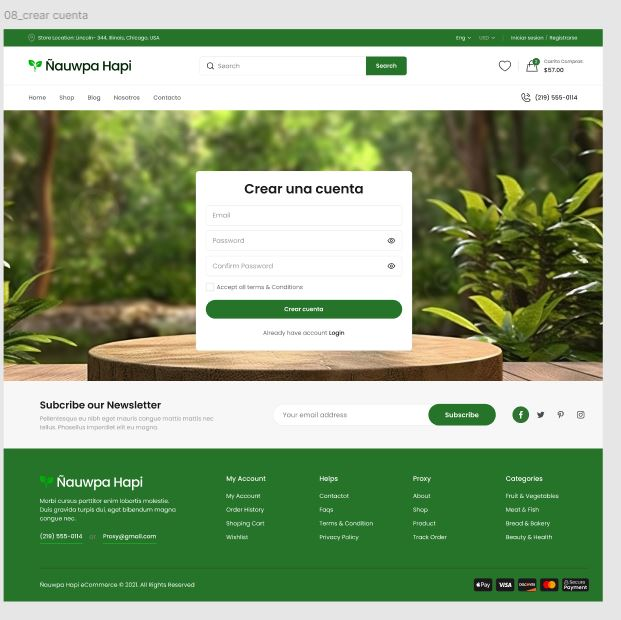
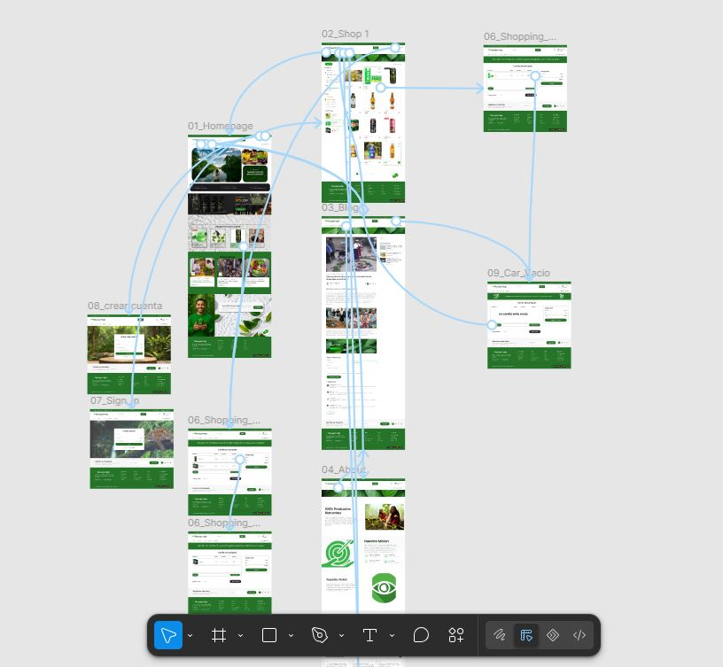

Prototipo de una Interfaz Web en Figma
Objetivo
Diseñar y prototipar la interfaz de una aplicación web, definiendo la estructura, navegación y experiencia de usuario de las principales funcionalidades. El objetivo fue contar con una representación visual e interactiva que sirviera como referencia para la posterior implementación del sistema.
Tecnologías utilizadas
Figma
Capturas del proyecto
Sitio web de comercio electrónico orientado a la venta de bebidas, diseñado para ofrecer una experiencia de compra sencilla y organizada. La plataforma permite explorar productos, agregarlos al carrito, gestionar cantidades y realizar el proceso de pago de forma integrada.

